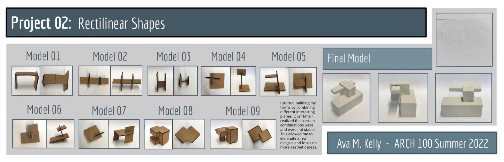
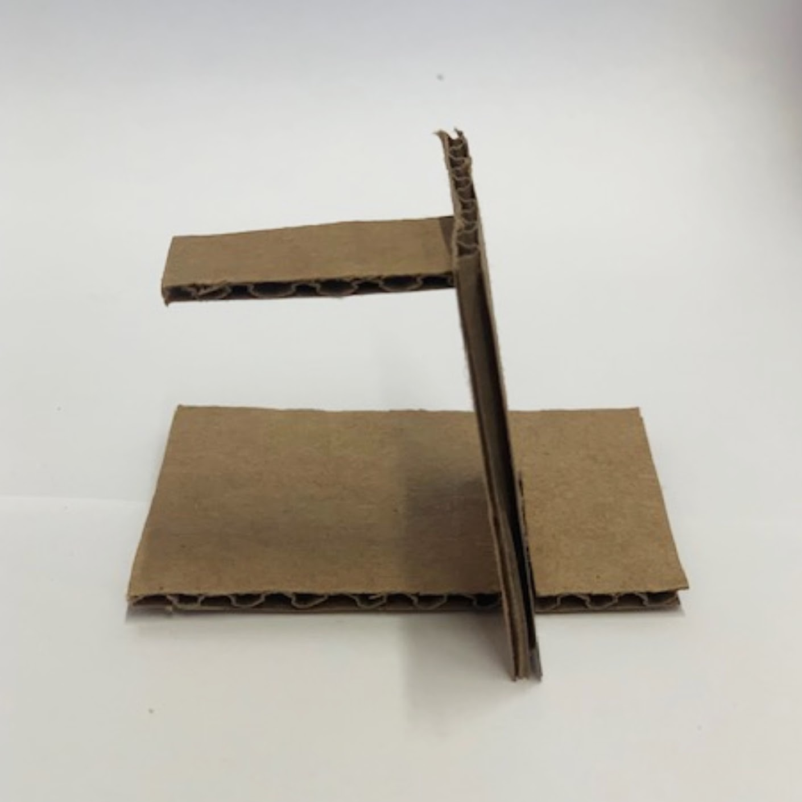
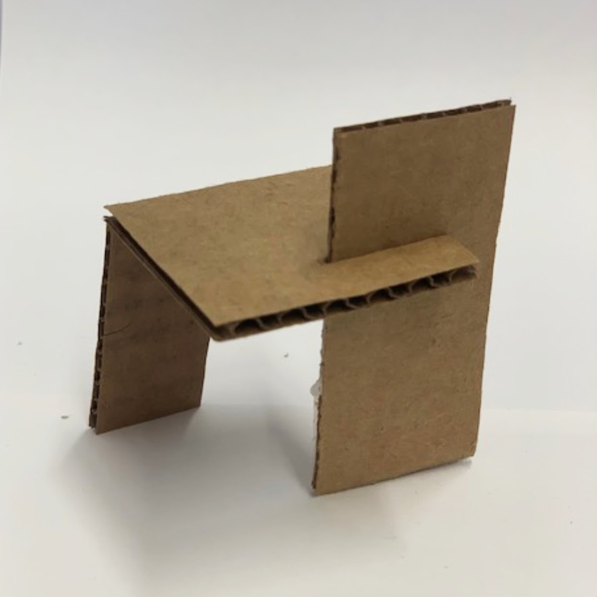

Rectilinear Shapes
Project 02: forms built by combining planes, nine models and a final model.
I started building my forms by combining different interesting planes. Over time I realized that certain combinations were not stable. This allowed me to eliminate a few designs and focus on more aesthetic ideas.


